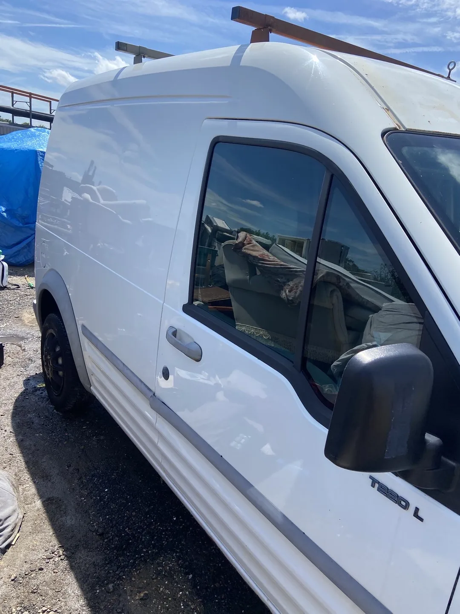

Listen first
Understand what the customer wants improved before the work begins.
JF Auto Detailing started with a personal goal and grew into a business focused on giving customers a result they can immediately see and enjoy.

In 2024, the owner started cleaning cars at 14 to earn money for a holiday with his grandad. The work quickly became more than a way to save: it revealed a real passion for transforming vehicles and creating a finish customers could feel proud of.
That passion has grown into JF Auto Detailing, a drop-off business based in Marks Tey.
The best part of every job is returning a dirty vehicle looking, feeling and smelling fresh, then seeing the customer’s reaction to the result.
Understand what the customer wants improved before the work begins.
Use the focused service list to match the work to the vehicle.
Give the important areas the time and attention they need.
Hand the vehicle back with a finish the customer can immediately appreciate.
Book a service and let JF show you what a careful transformation can achieve.